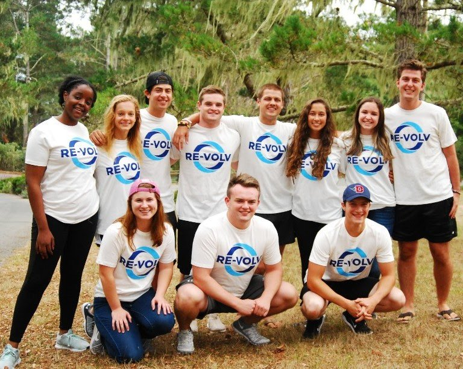

Yale University
Project Lead: Lauren Delgado
Team: Katie Schlick, Kendall Brent, Carrie Heilbrun
Partner: TBA
Ambassador
Fellowship & Program Info
Fellowship Description
Are you a college student passionate about renewable energy? Are you interested in taking action to put up solar in your community? If the opportunity to install a solar energy system on a nonprofit or cooperative near you sounds exciting, then RE-volv wants to help you make it happen.
The Solar Ambassador Fellowship is a fellowship for one academic year that gives college students the opportunity to spearhead a solar project in their community using RE-volv’s innovative solar financing model. We are looking for creative, passionate, and resourceful college students who are eager to spread solar across the country.
Interested in applying but have questions? Reach out to Elyse Wood at elyse@re-volv.org to set up an intro call.
Requirements
- The team is comprised of at least 3 but no more than 10 college students who will be enrolled in a college or university 2019-2020
- The team completes a Team Application
- The team completes an online training to help them gather a list of nonprofits that may want to go solar through RE-volv
- The team begins formal training to run a successful campaign and complete the project
Benefits
During the academic year, RE-volv will help teams bring their solar projects to fruition. To facilitate this, each team will select one Project Lead who will be invited to an all-expense-paid Solar Ambassador Leadership Summit held in July or August in the San Francisco Bay Area. This summit will train Project Leads on solar finance and policy, crowdfunding, event planning, communications, and community engagement - all the skills needed to complete their proposed project! Every Solar Ambassador will also be provided with exclusive resources and campaign materials.
During the academic year, all team members will participate in biweekly webinars with RE-volv staff and special guests from leading environmental organizations and solar companies. Topics range from renewable energy to environmental justice, and these webinars will serve as discussion rooms for fellow Solar Ambassadors to share ideas. All Solar Ambassadors will also receive close mentoring and guidance from RE-volv staff.
Interested in applying? Before you do, reach out to Elyse Wood at elyse@re-volv.org to set up an intro call.
Meet the 2018-2019 Solar Ambassadors!

American University
Project Lead: Samantha Miller, Fraser Lee Hudgins
Team: Sarah Lyon, Paige Shoemaker, Danielle Dumais, Ana Lipton, Max Camateros-Mann, Zainab Mirza
Partner: TBA
University of Dayton
Project Lead: Emily Burns
Team: Tess Isemann, Colin Joern, Thomas Abrams, Sam Dasco , Nicholas Oesterling, Melissa Padera, Nina Santarpia, Luke Skobieranda
Partner: TBA
University of New England
Project Lead: Ryan Arbuckle
Team: Carmen Dancy, Caleb Pulliam, Sam MacKenzie, Kathryn Willer, John (Jack) MacMullin
Partner: TBA
University of Wisconsin-Madison
Project Lead: Will Nicholson
Team: Jacob Ng, Mick Hanrahan
Partner: TBA
University of Wisconsin-Milwaukee
Project Lead: Lauren Bonofiglio
Team: Lukas Guillien, Liz Fennimore, Fidel Sierra, Bill Becker, Kyle Gasariowitz Rachelle, McDowell Madhur, Malhorta Kuldeep Mann
Partner: TBA
Purdue University
Project Lead: Hannah Jongkind
Team: Anna Adamsson, Artha Lou C Da Silva, Casey Stowers, Liana Zogbi, Samuel Heath
Partner: TBA
University of Oregon
Project Lead: Ama Duru
Team: Bryce Shortal, Anna Yee, Jaron Malcom, Haley Hemphill
Partner: TBA
Duke University
Project Lead: Jack Ferrante
Team: Conrad Mitchell, Grant Mak, Quin Ferrante, Manish Kumar, Jake Gerard
Partner: TBA
Coastal Carolina University
Project Lead: Danielle Kvadas
Team: Breanna Dew, Emily Doscher, Lyle Ciardi, Shani Caplan-Chernoff, Allison Lavallee, Lucie Marshall, Griffin Unruh, Cat Sweeny, Daniel Hallock, Anthony (Stosh) Hess, Jacob Doty
Partner: TBA

University of California Santa Barbara
Project Lead: Michelle Le
Team: Veronica Hsu, Andrew Lee, Briana Zhen, Luis Aragon, Jacob Ruvalcaba, Cynthia Torres, Ryan Zinniger, Iris Li, Caroline Fyfe, Jennifer Olguin, Elvia Cruz-Garcia, Sydney Bartone, Brendan Abatecola
Partner: TBA
Claremont Colleges
Project Lead: Gavin Siegert
Team: TBA
Partner: TBA
University of California Santa Cruz
Project Lead: Tyler Vallejos
Team: TBA
Partner: TBA
University of Southern California
Project Lead: Jose Hernandez
Team: TBA
Partner: TBA
About the
Solar Ambassador Fellowship
The Solar Ambassador Fellowship is a year-long fellowship for college students who want to help a community-serving organization near their campus go solar! RE-volv trains ambassadors in crowdfunding, solar policy, community engagement, and project management. In turn, the Solar Ambassadors educate their campus communities about solar energy, develop a deep understanding of the energy sector, produce a tangible reduction in carbon emissions, and build a national network of environmental stewards.
Interested in applying? Before you do, reach out to Elyse Wood at elyse@re-volv.org to set up an intro call.